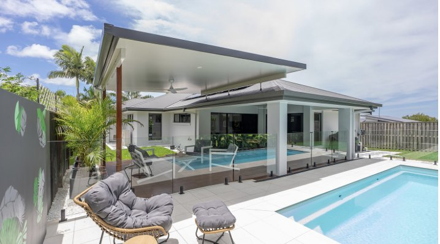
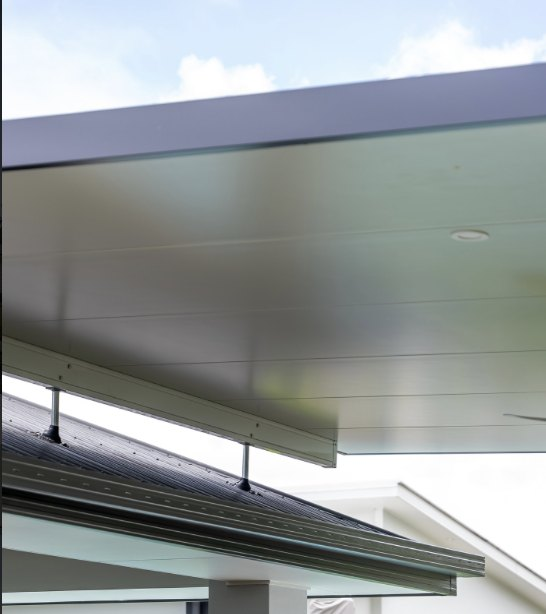

Patios and entertaining
Create practical covered outdoor areas.
Explore roofing panels for patios, pergolas, carports and outdoor entertaining areas, supplied from Northern NSW to Cairns.
Request a quoteInsulated roof panel systems combine a roof surface, insulation core and finished underside. Suitability depends on the product selected and project requirements.
Our team can help you identify relevant product information and technical documents before you request a quote.

Create practical covered outdoor areas.
Consider panel appearance, support and drainage details.
Explore suitable roofing products and accessories.
Span capacities, wind classifications and installation requirements vary. Always use the correct current manufacturer documents and qualified project-specific advice.
View span tables and technical resourcesFrom Northern NSW through the Gold Coast, Brisbane, Sunshine Coast, Central Queensland, Mackay and Townsville to the Cairns region. Delivery and availability should be confirmed for each enquiry.
Request roofing quote